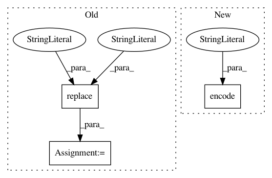

4a66d8672dce4d4859f03dea572833eaa003ede6,perfkitbenchmarker/windows_virtual_machine.py,WindowsMixin,RemoteCommand,#WindowsMixin#Any#Any#Any#Any#Any#,50
Before Change
set_error_pref = "$ErrorActionPreference="Stop""
password = self.password.replace(""", """")
create_cred = (
"$pw = convertto-securestring -AsPlainText -Force \"%s\""
"$cred = new-object -typename System.Management.Automation"
".PSCredential -argumentlist %s,$pw" % (password, self.user_name))
create_session = (
"$session = New-PSSession -Credential $cred -Port %s -ComputerName %s" %
(self.winrm_port, self.ip_address))
invoke_command = (
"Invoke-Command -Session $session -ScriptBlock { %s };"
"exit Invoke-Command -Session $session -ScriptBlock "
"{ $LastExitCode }" % command)
cmd = "".join([set_error_pref, create_cred,
create_session, invoke_command])
stdout, stderr, retcode = vm_util.IssueCommand(
["powershell", "-Command", cmd], timeout=timeout,
suppress_warning=suppress_warning, force_info_log=should_log)
After Change
s = winrm.Session("https://%s:%s" % (self.ip_address, self.winrm_port),
auth=(self.user_name, self.password),
server_cert_validation="ignore")
encoded_command = base64.b64encode(command.encode("utf_16_le"))
r = s.run_cmd("powershell -encodedcommand %s" % encoded_command)
retcode, stdout, stderr = r.status_code, r.std_out, r.std_err
In pattern: SUPERPATTERN
Frequency: 4
Non-data size: 3
Instances
Project Name: GoogleCloudPlatform/PerfKitBenchmarker
Commit Name: 4a66d8672dce4d4859f03dea572833eaa003ede6
Time: 2017-10-30
Author: ehankland@google.com
File Name: perfkitbenchmarker/windows_virtual_machine.py
Class Name: WindowsMixin
Method Name: RemoteCommand
Project Name: lanpa/tensorboardX
Commit Name: 78ba1c8cfcd2c31f1e1b007d2e20e771049e869b
Time: 2018-01-04
Author: huang.dexter@gmail.com
File Name: tensorboardX/graph.py
Class Name:
Method Name: graph
Project Name: unitedstates/congress-legislators
Commit Name: 405b21de13f593c3106125be6d7d6299ed9141a5
Time: 2014-06-25
Author: jt@occams.info
File Name: scripts/senate_contacts.py
Class Name:
Method Name: run
Project Name: sassoftware/python-dlpy
Commit Name: 81212e841322442c03e3b3df80ab4db3e7aecfb9
Time: 2019-05-31
Author: docair@v64-docair-09.dept-ter.sashq-d.openstack.sas.com
File Name: dlpy/model_conversion/write_keras_model_parm.py
Class Name:
Method Name: write_keras_hdf5